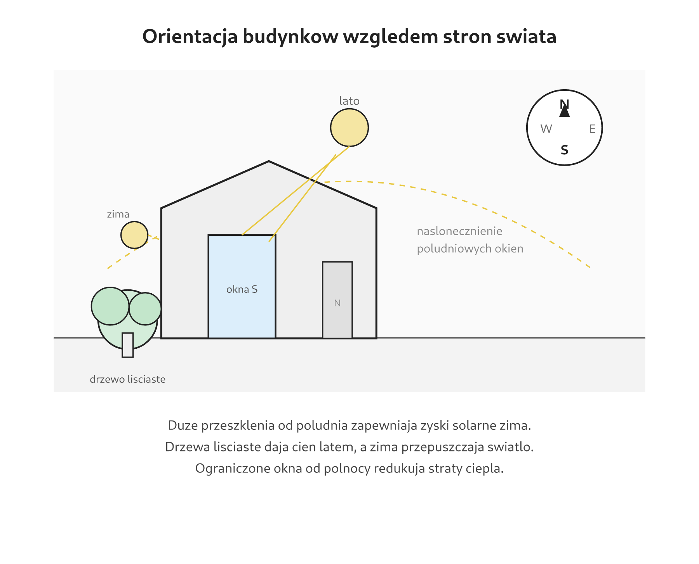
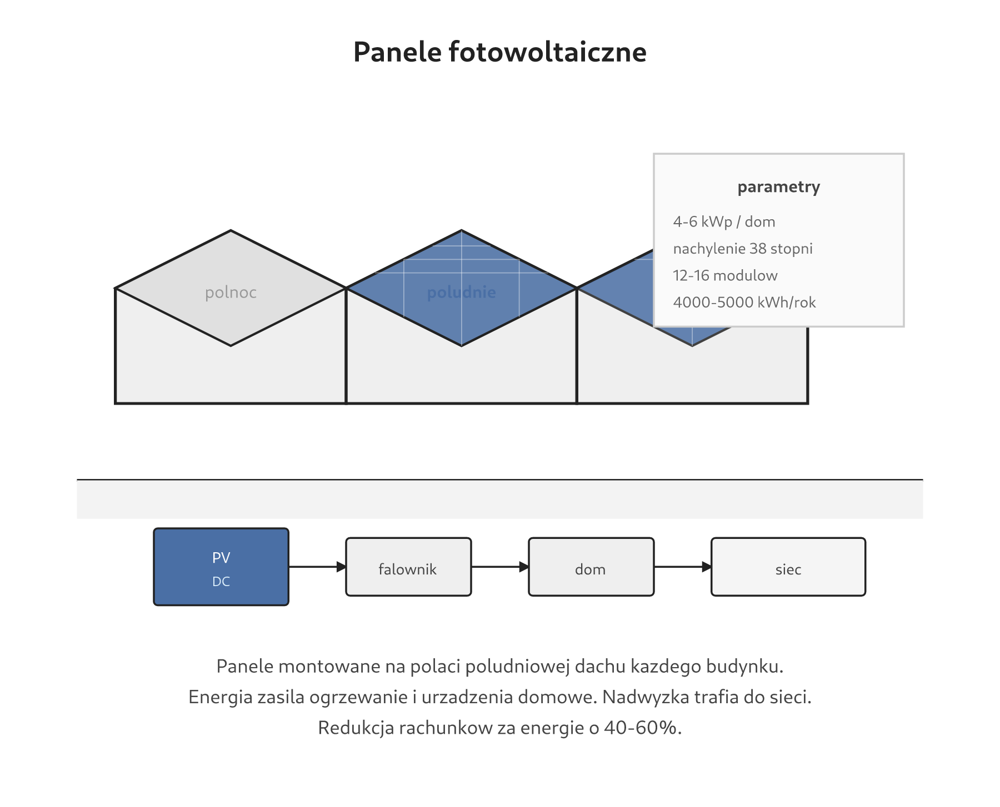
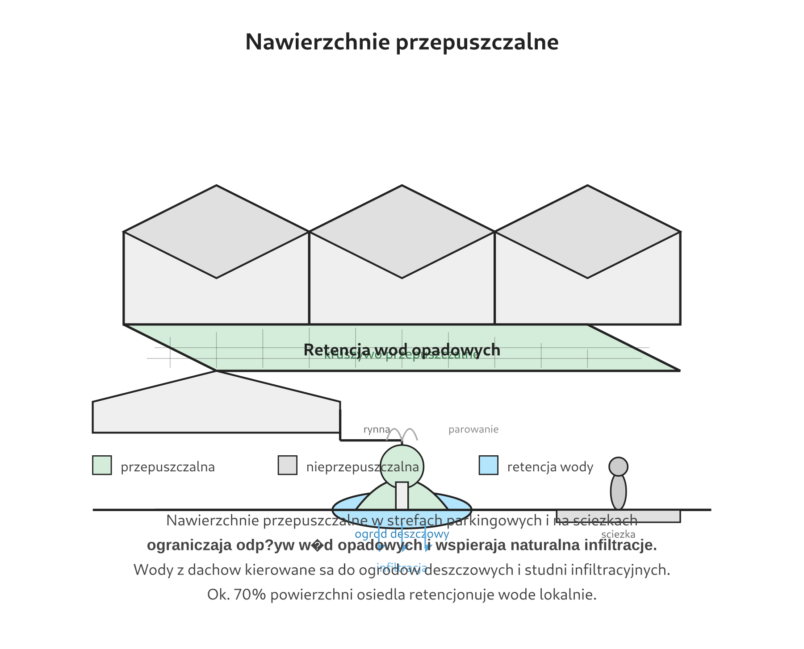
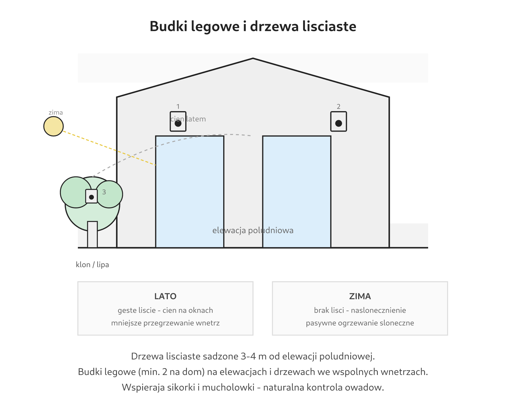
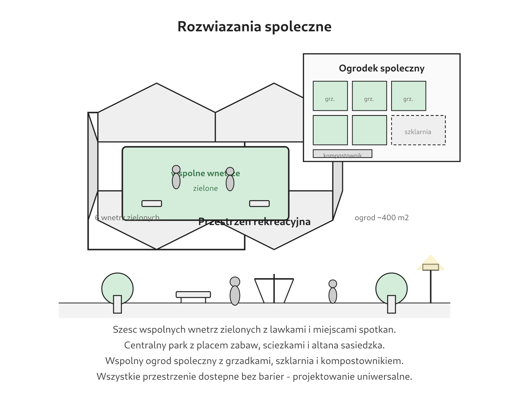

podglad.html — otworzy sie w przegladarce.
Schematy w stylu architektonicznym (cienkie linie, izometria, szare tony).
Pliki PNG z folderu png/ wstaw do Worda lub na plansze B2.

Domy z duzymi oknami od poludnia i drzewami lisciastymi dajacymi cien latem. Zima slonce ogrzewa wnetrza.

Panele PV na polaci poludniowej dachu, 4-6 kWp na dom, produkcja 4000-5000 kWh/rok.

Sciezki i place przepuszczalne, ogrody deszczowe i studnie infiltracji — lokalna retencja wody.

Budki legowe dla ptakow i drzewa lisciaste przy elewacjach poludniowych.

Wspolny ogrod spoleczny, 6 wnetrz zielonych i park centralny z placem zabaw i altana.